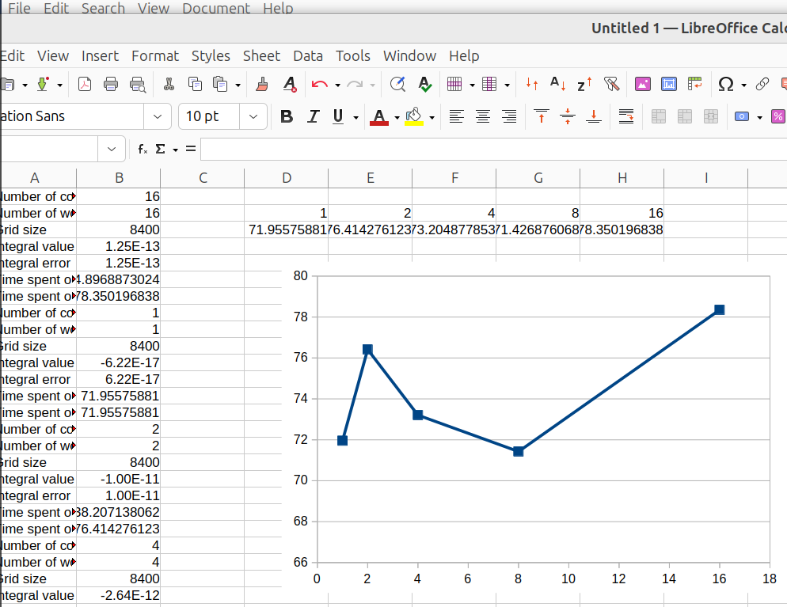
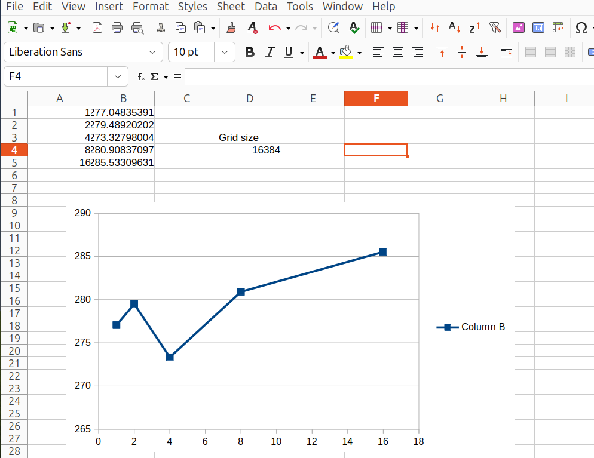
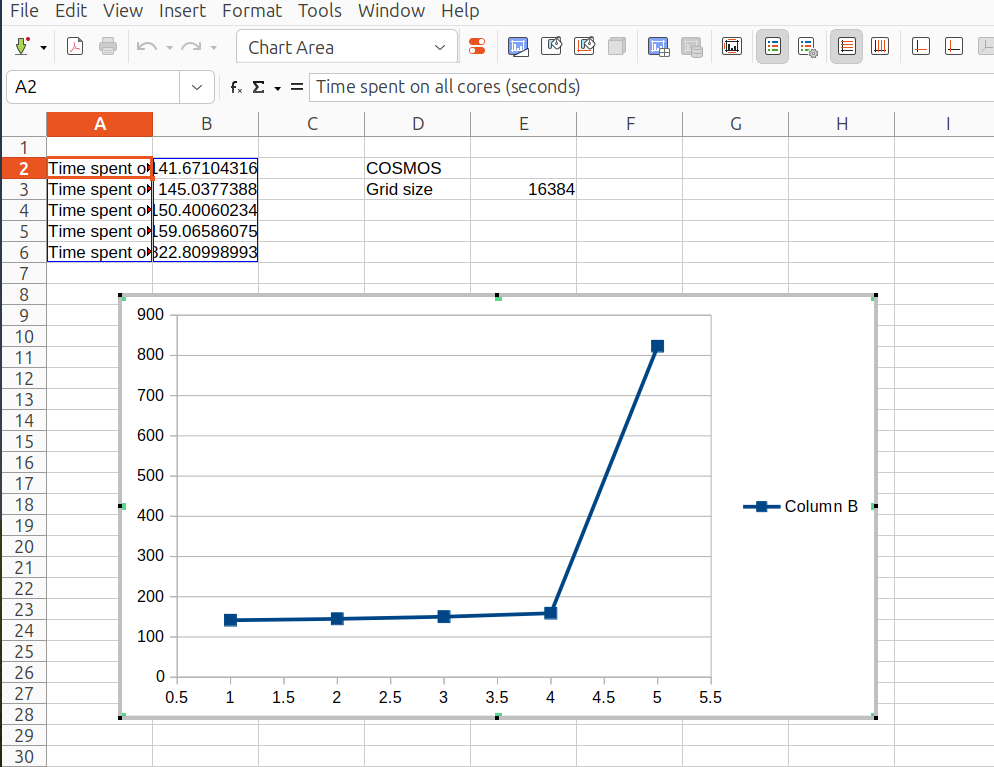

Lesson plan Advanced by Richel¶
- Date: Tuesday 2025-10-06
- Course: Advanced
2025-09-04¶
I need to improve the SCoRe user documentation on using HPC resources efficiently. This goes perfectly hand-in-hand with the parallel computing session.
As the parallel session is language agnostic, I do not need to use R, Julia or MATLAB code at all. Instead, I can use BEAST2.
From the first 1000 lines of UPPMAX modules, these were labelled to be the most popular: GROMACS, BWA, Bowtie2, ABySS, GATK, BEDTools. I also heard of LINPACK and BLAST.
Let’s start with GROMACS, as it is popular and available on Pelle.
- YouTube video
- 1UN3 RCSB page
- Downloaded
1UN3.pdb

To run on Pelle:
wget https://github.com/UPPMAX/R-matlab-julia-HPC/raw/refs/heads/main/docs-mk/lesson_plans/20251010_richel/lumi_course/run_pelle.sh
sbatch run_pelle.sh
Need to use srun
2025-09-11¶
I think this was a bad idea: the course is an R and MATLAB and Julia course. Let’s change the learning outcome to run a script in one of those languages.
2025-09-16¶
I am going to start with the MPI scripts now. They work! And then I find out that OpenMPI is not OpenMP.
I feel:
| Technique | Uses | Notes |
|---|---|---|
| Normal | 1 core | . |
| OpenMP | 1 to all cores on a node | A threaded mechanism, uses OMP_NUM_THREADS |
| OpenMPI | 1 to all cores on multiple nodes | Rmpi package |
Works:
$ sbatch integration2d-rackham_8.sh
Submitted batch job 56823317
[richel@rackham3 6_integration2d]$ cat slurm-56823317.out
R_packages/4.1.1: The RStudio packages pane is disabled when loading this module, due to performance issues. All packages are still available.
R_packages/4.1.1: For more information and instructions to re-enable it, see 'module help R_packages/4.1.1'
Loading required package: foreach
Loading required package: iterators
[1] "Integral value is 9.07607322631065e-15 Error is 9.07607322631065e-15"
[1] "Time spent: 0.263934373855591 seconds"
Using a CLI arg works fine, as long as it is convert to a numeric value:
[richel@rackham3 6_integration2d]$ cat *.out
[...]
nworkers: 1
[1] "Integral value is -5.22070689324334e-16 Error is 5.22070689324334e-16"
[1] "Time spent: 0.813078641891479 seconds"
[...]
nworkers: 8
[1] "Integral value is 9.07607322631065e-15 Error is 9.07607322631065e-15"
[1] "Time spent: 0.228480815887451 seconds"
Using a 10x bigger grid:
[richel@rackham3 6_integration2d]$ cat slurm-56825681.out
[...]
nworkers: 1
[1] "Integral value is -6.2179313190142e-17 Error is 6.2179313190142e-17"
[1] "Time spent: 64.7400653362274 seconds"
[richel@rackham3 6_integration2d]$ cat slurm-56825683.out
[...]
nworkers: 8
[1] "Integral value is -4.35873559467836e-13 Error is 4.35873559467836e-13"
[1] "Time spent: 8.92967510223389 seconds"
Interesting, that if the grid increases 10x, 1 worker takes 80x longer and 8 workers take 40x longer. Also, the accuracy decreases with multiple works. Also, the overhead changes
| Grid size | Time 1 worker | Time 8 workers | Corehours 8 workers | Overhead |
|---|---|---|---|---|
| Original | 0.81 | 0.22 | 8*0.22=1.76 | 1.76/0.81=2.172839506 |
| 10x | 64.74 | 8.93 | 8*8.93=71.44 | 71.44/64.74=1.103490887 |
| Increase | 80x | 40x | 40x | NA |
OK, now it is time to cleanup the script a bit. I want these to display the corehours too, and less fluff.
Output is cleaner:
[richel@rackham3 6_integration2d]$ ls
integration2d-cosmos.sh integration2d-rackham_1.sh schedule_rackham_runs.sh
integration2d-dardel.sh integration2d-rackham_8.sh slurm-56827590.out
integration2d-kebnekaise.sh integration2d_rackham_x.sh slurm-56827597.out
integration2d.R integration2d-tetralith.sh
[richel@rackham3 6_integration2d]$ cat *.out
Number of cores booked in Slurm: 1
Number of workers: 1
Grid size: 8400
Integral value: -6.2179313190142e-17
Integral error: 6.2179313190142e-17
Time spent on 1 core: 67.9925961494446 seconds
Time spent on all cores: 67.9925961494446 seconds
Number of cores booked in Slurm: 8
Number of workers: 8
Grid size: 8400
Integral value: -4.35873559467836e-13
Integral error: 4.35873559467836e-13
Time spent on 1 core: 9.48788905143738 seconds
Time spent on all cores: 75.903112411499 seconds
A replication experiment:
[richel@rackham3 6_integration2d]$ cat *.out
Number of cores booked in Slurm: 1
Number of workers: 1
Grid size: 8400
Integral value: -6.2179313190142e-17
Integral error: 6.2179313190142e-17
Time spent on 1 core: 71.8729729652405 seconds
Time spent on all cores: 71.8729729652405 seconds
Number of cores booked in Slurm: 1
Number of workers: 1
Grid size: 8400
Integral value: -6.2179313190142e-17
Integral error: 6.2179313190142e-17
Time spent on 1 core: 72.9636025428772 seconds
Time spent on all cores: 72.9636025428772 seconds
Number of cores booked in Slurm: 1
Number of workers: 1
Grid size: 8400
Integral value: -6.2179313190142e-17
Integral error: 6.2179313190142e-17
Time spent on 1 core: 75.2127022743225 seconds
Time spent on all cores: 75.2127022743225 seconds
Number of cores booked in Slurm: 1
Number of workers: 1
Grid size: 8400
Integral value: -6.2179313190142e-17
Integral error: 6.2179313190142e-17
Time spent on 1 core: 74.9676728248596 seconds
Time spent on all cores: 74.9676728248596 seconds
Number of cores booked in Slurm: 1
Number of workers: 1
Grid size: 8400
Integral value: -6.2179313190142e-17
Integral error: 6.2179313190142e-17
Time spent on 1 core: 73.961464881897 seconds
Time spent on all cores: 73.961464881897 seconds
Number of cores booked in Slurm: 1
Number of workers: 1
Grid size: 8400
Integral value: -6.2179313190142e-17
Integral error: 6.2179313190142e-17
Time spent on 1 core: 73.2491600513458 seconds
Time spent on all cores: 73.2491600513458 seconds
[richel@rackham3 6_integration2d]$
I give up calling a Slurm script with the -A or -n parameter:
it does not work (that is how I got a replicate run)
Number of cores booked in Slurm: 16
Number of workers: 16
Grid size: 8400
Integral value: 1.25011112572793e-13
Integral error: 1.25011112572793e-13
Time spent on 1 core (seconds): 4.89688730239868
Time spent on all cores (seconds): 78.3501968383789
Number of cores booked in Slurm: 1
Number of workers: 1
Grid size: 8400
Integral value: -6.2179313190142e-17
Integral error: 6.2179313190142e-17
Time spent on 1 core (seconds): 71.9557588100433
Time spent on all cores (seconds): 71.9557588100433
Number of cores booked in Slurm: 2
Number of workers: 2
Grid size: 8400
Integral value: -1.00190966634273e-11
Integral error: 1.00190966634273e-11
Time spent on 1 core (seconds): 38.2071380615234
Time spent on all cores (seconds): 76.4142761230469
Number of cores booked in Slurm: 4
Number of workers: 4
Grid size: 8400
Integral value: -2.64421817774974e-12
Integral error: 2.64421817774974e-12
Time spent on 1 core (seconds): 18.3012194633484
Time spent on all cores (seconds): 73.2048778533936
Number of cores booked in Slurm: 8
Number of workers: 8
Grid size: 8400
Integral value: -4.35873559467836e-13
Integral error: 4.35873559467836e-13
Time spent on 1 core (seconds): 8.9283595085144
Time spent on all cores (seconds): 71.4268760681152

Bigger job:
Number of cores booked in Slurm: 1
Number of workers: 1
Grid size: 16384
Integral value: 1.76582323875401e-16
Integral error: 1.76582323875401e-16
Time spent on 1 core (seconds): 277.048353910446
Time spent on all cores (seconds): 277.048353910446
Number of cores booked in Slurm: 2
Number of workers: 2
Grid size: 16384
Integral value: -1.81823445188911e-11
Integral error: 1.81823445188911e-11
Time spent on 1 core (seconds): 139.744601011276
Time spent on all cores (seconds): 279.489202022552
Number of cores booked in Slurm: 4
Number of workers: 4
Grid size: 16384
Integral value: -3.75399711316504e-12
Integral error: 3.75399711316504e-12
Time spent on 1 core (seconds): 68.331995010376
Time spent on all cores (seconds): 273.327980041504
Number of cores booked in Slurm: 8
Number of workers: 8
Grid size: 16384
Integral value: -3.48418516260551e-12
Integral error: 3.48418516260551e-12
Time spent on 1 core (seconds): 35.11354637146
Time spent on all cores (seconds): 280.90837097168
Number of cores booked in Slurm: 16
Number of workers: 16
Grid size: 16384
Integral value: 2.79685996584789e-13
Integral error: 2.79685996584789e-13
Time spent on 1 core (seconds): 17.8458185195923
Time spent on all cores (seconds): 285.533096313477

Hmmm, my COSMOS jobs end up on different nodes …?
[richel@cosmos1 6_integration2d]$ squeue --me
JOBID PARTITION NAME USER ST TIME NODES NODELIST(REASON)
1587029 lu48 integrat richel R INVALID 3 cn[003,008,010]
1587033 lu48 integrat richel R INVALID 1 cn010
1587032 lu48 integrat richel R INVALID 1 cn010
1587031 lu48 integrat richel R INVALID 1 cn039
1587030 lu48 integrat richel R INVALID 1 cn010
Results:
Number of cores booked in Slurm: 1
Number of workers: 1
Grid size: 16384
Integral value: 1.76582323875401e-16
Integral error: 1.76582323875401e-16
Time spent on 1 core (seconds): 141.671043157578
Time spent on all cores (seconds): 141.671043157578
Number of cores booked in Slurm: 2
Number of workers: 2
Grid size: 16384
Integral value: -1.81823445188911e-11
Integral error: 1.81823445188911e-11
Time spent on 1 core (seconds): 72.5188694000244
Time spent on all cores (seconds): 145.037738800049
Number of cores booked in Slurm: 4
Number of workers: 4
Grid size: 16384
Integral value: -3.75399711316504e-12
Integral error: 3.75399711316504e-12
Time spent on 1 core (seconds): 37.6001505851746
Time spent on all cores (seconds): 150.400602340698
Number of cores booked in Slurm: 8
Number of workers: 8
Grid size: 16384
Integral value: -3.48418516260551e-12
Integral error: 3.48418516260551e-12
Time spent on 1 core (seconds): 19.8832325935364
Time spent on all cores (seconds): 159.065860748291
Number of cores booked in Slurm: 16
Number of workers: 16
Grid size: 16384
Integral value: 2.79685996584789e-13
Integral error: 2.79685996584789e-13
Time spent on 1 core (seconds): 51.425624370575
Time spent on all cores (seconds): 822.809989929199

2025-09-17¶
I feel confident with the threaded parallelism. Pedro did a great job with the materials!
Steps:
- [x] Sketch content ‘Threaded parallelisms’
- [x] Julia
- [ ] MATLAB
- [x] R
- [ABANDON] Sketch content ‘Distributed parallelisms’
- [x] Sketch content ‘General parallelism’
- [ ] Julia
- [ ] MATLAB
- [x] R
2025-09-23¶
Now I have more or less carved out the content, let’s restart with learning outcomes…
2025-09-26¶
- [ ] Make first script download all others
- [ ] Fix and run MATLAB script
2025-10-09¶
I’ve been ill, removing 3 full days of preparation.
I will reduce my goals and prepare as such:
- Current exercises in draft form
- Fix MATLAB if possible and if at least 1 participant
2025-10-10¶
I’ve prepared good enough:
- Exercises are done
- Video is made
- MATLAB does not work